Aller au contenu

PyMoX Doc
Tools
Initialisation de la recherche
PyMoX-fr
PyMoX Doc
PyMoX-fr
🏡 Accueil
Outils
Outils
Technos
Technos
Languages
Languages
Python
Flet / FletX
Mojo
PHP
SQL
Env
Env
Git
Vsc
Vsc
VSC - Visual Studio Code
Extensions VSC
Backend
Backend
Semantic release
Semantic release
Types de Commits pour PyMoX
Guide Semantic Release pour PyMoX
Workflows
Workflows
🚀 Workflow Push
Workflow Daily
Workflow Hebdo
Benchmarks
Benchmarks
🧪 Benchmark C++
🏁 Benchmark Mojo
Logs
Logs
📋 À faire (To Do list)
🆕 CHANGELOG
⏱️ Dernier déploiement
🧠 Citations
📝 Rapport Hebdo
Divers
Divers
🪙 Crêpes
🥖 Pain
Tools
⚓︎
Retour en haut de la page